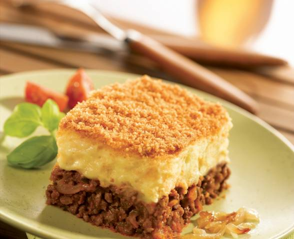

Recettes Hachis Parmentier

Description
Hachis Parmentier
45 min environs de préparation
Ingrédients
Pour plus de détails sur la recette, veuillez visiter le site :
Site marmiton
recette riz
- 300 g de purée
- 2 oignons
- 2 gousses d'ail
- 2 tomates fraîches ou pelées
- 1 c.à.s de farine
- 1 pincée de herbes de Provence
- 30 g de Parmesan
- 30 g de beurre
- 50 g de fromage râpé
- Sel
- Poivre
- 400 g de viande hachée
Étapes
- Hacher l'oignon et l'ail. Les faire revenir dans le beurre jusqu'à ce qu'ils soient tendres.
- Ajouter les tomates coupées en dés, la viande hachée, la farine, du sel, du poivre et les herbes de Provence.
- Quand tout est cuit, couper le feu et ajouter le jaune d'oeuf et un peu de parmesan. Bien mélanger.
- Préchauffer le four à 200°C (thermostat 6-7). Étaler au fond du plat à gratin. Préparer la purée. L'étaler au dessus de
la viande. Saupoudrer de fromage râpé et faire gratiner.
Retourner à l’accueil